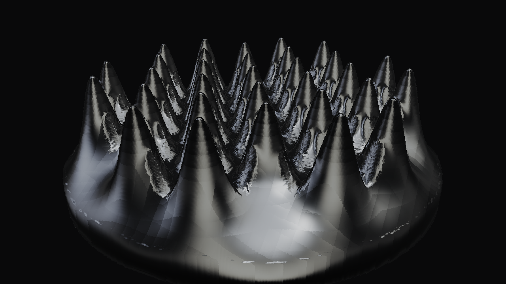
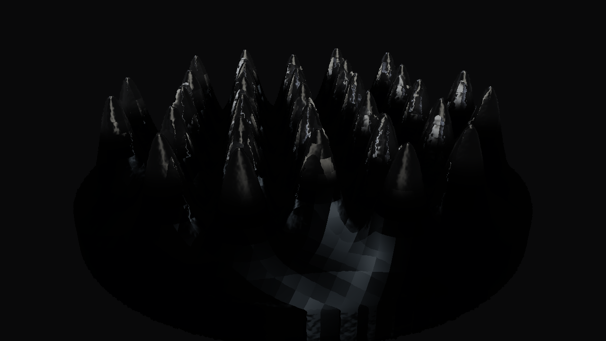
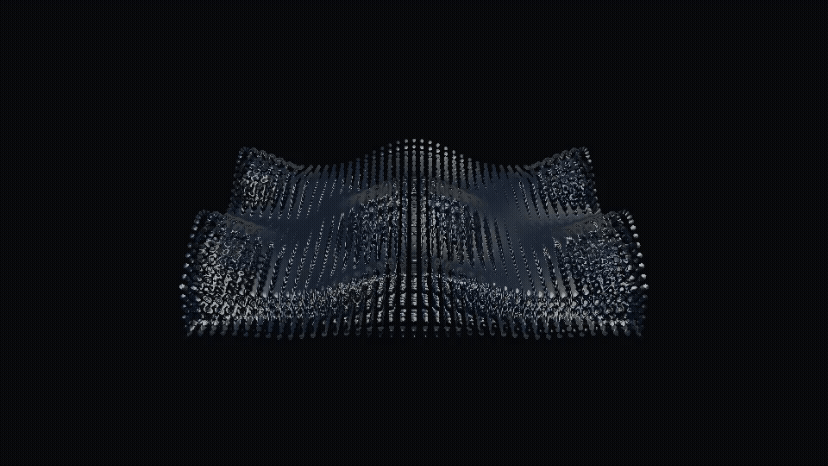

FerroFlyid
A particle-based ferrofluid simulation prototype transformed from a cloth simulator, combining SPH-inspired particle motion, simplified magnetic forces, and screen-space fluid rendering.

Abstract
FerroFlyid is a particle-based ferrofluid simulation that models fluid-like particle motion under a simplified magnetic force. The goal of the project is to create a visually convincing ferrofluid prototype where particles move as a cohesive liquid, react to magnet placement and strength, and render as a smooth dark reflective surface instead of separate individual particles.
Our system uses an SPH-inspired particle model with local particle interactions, gravity, damping, container boundaries, and configurable magnetic forces. To improve the visual result, we also built a screen-space fluid rendering pipeline that smooths the raw particles into a continuous liquid surface with thickness, normal filtering, and mirror-like shading.
Main takeaway: We achieved a visually compelling ferrofluid-like system with magnetic motion and reflective liquid rendering, but true Rosensweig spike formation requires more advanced magnetic surface-stress modeling than our simplified force-based approach.
Technical Approach
Overall Code Structure
Our final project still uses the original CS184 cloth simulator framework for the viewer,
camera, GUI, shader loading, and scene loading. However, the main active simulation is now
a particle-based fluid system instead of a cloth simulation. The executable is still called
clothsim, but the project mostly runs through the new fluid simulation code.
The main fluid code is in fluid.cpp and fluid.h. These files define
the fluid particles, simulation parameters, magnetic settings, and the main simulation step.
The solver interface is handled through files in the solver/ folder. The main SPH-style
backend wraps around FluidSim, while other CPU/Eulerian and CUDA-related files are
present but not always part of the main active path.
Rendering is handled mostly through clothSimulator.cpp, even though the name still
comes from the original project. This file now controls the fluid drawing path, including raw
particle rendering, marching-cubes surface rendering, and screen-space fluid rendering.
Particle Simulation
The fluid is made of many particles. Each particle stores its position and velocity. During each frame, the simulator also computes extra values such as density, pressure, acceleration, and magnetic force values using temporary arrays.
One simulation step works like this: first, the code builds a grid so each particle can quickly find nearby particles. Then it estimates density and pressure from nearby particles. After that, it adds different forces such as gravity, pressure, viscosity, cohesion, repulsion, and magnetic forces. Finally, the particle velocities and positions are updated, and boundary collisions are handled so the particles stay inside the container.
Build grid
Put particles into a uniform grid so nearby particles can be found faster.
Compute fluid values
Estimate density and pressure using nearby particles.
Apply forces
Add gravity, pressure, viscosity, cohesion, repulsion, and magnetic forces.
Update particles
Move particles forward in time and keep them inside the container.
Fluid Behavior
Our fluid behavior is SPH-inspired, but it is not a fully exact physical SPH solver. The code uses nearby particles to make the particle group behave more like a liquid. Pressure helps push particles apart when they get too dense. Viscosity damps relative motion between nearby particles. Repulsion prevents particles from collapsing into each other, while cohesion pulls nearby particles together to make the fluid look more connected.
To make the simulation more stable, the code also includes optional incompressibility correction.
This helps reduce clumping and keeps particles from becoming too compressed. Parameters such as
simulation_substeps, damping, smoothing_radius,
pressure_k, viscosity, surface_tension, and
repulsion_k control how the fluid moves and how stable it is.
Magnetic Behavior
To create ferrofluid-like behavior, we added magnetic force models that deform the particles based on magnetic field settings. The simpler model pulls particles toward stronger magnetic field regions. We also added a more advanced Huang-inspired model that computes induced magnetic moments and pairwise magnetic forces between particles.
The magnetic behavior can be controlled through scene parameters such as magnet position, magnet strength, magnetic field direction, susceptibility, and force limits. Some scenes use a vertical magnetic field and a circular dish setup to create spike-like ferrofluid patterns.
Our magnetic model is still an approximation. It can create Rosensweig-like visuals, but it does not fully solve real ferrofluid physics. The spike behavior comes from simplified particle interactions, magnetic forces, parameter tuning, and rendering.
Magnetic Equations
For the magnetic equation, we used the paper's particle magnetic field formulation as a reference. In the paper, a particle with magnetic moment m contributes a magnetic field at position r:
Here, r̂ is the normalized direction from the particle, W(r) is the smoothing kernel, and Wavr(r) is an averaged version of the kernel inside radius r. The paper defines it as:
The paper also writes the particle interactions in matrix form. The total magnetic flux density can be written as:
The magnetic moment is related to the flux density by:
Substituting this into the previous equation gives the linear system:
In our code, this idea is used as a simplified Huang-style particle interaction model. We do not solve the full real-world ferrofluid equations exactly, but this gave us a better way to approximate induced magnetic moments and particle-to-particle magnetic forces.
Rendering Pipeline
Rendering was one of the most important parts of the project. If we draw the particles directly, the fluid looks like a group of small balls. To make it look more like a continuous ferrofluid, we added surface rendering methods.
The project supports raw particle rendering, marching-cubes surface rendering, and screen-space fluid rendering. The screen-space renderer works by first drawing particles into depth and thickness buffers. Then the buffers are smoothed so the particles blend together. After that, the renderer estimates surface normals and applies final liquid shading with reflection, absorption, and a dark ferrofluid-like material.
Depth pass
Draw particles into a screen-space depth buffer.
Thickness pass
Accumulate thickness so the fluid has more volume on screen.
Smoothing
Blur the depth and thickness buffers to hide individual particles.
Final shading
Use normals, reflection, and dark liquid shading for the ferrofluid look.
Scene Files and Export
The simulation is controlled through JSON scene files. These files let us change the particle layout, particle count, gravity, damping, magnet position, magnet strength, rendering mode, and export settings without changing the code. This made it easier to compare scenes such as no magnet, weak magnet, strong magnet, uniform magnetic field, and spike-focused tests.
The project can also export PNG frame sequences using the -E flag. This lets us render
animations frame by frame and then combine them into a video afterward. The code can also save
particle snapshots as JSON files, which is useful for rerendering or debugging.
Performance
To make neighbor lookup faster, the SPH particle solver uses a uniform spatial grid. This avoids checking every particle against every other particle in the basic neighbor search. Some loops also use OpenMP when available. There are CUDA-related files in the codebase, but in the current build path CUDA is disabled, so those files should be treated as experimental or unused rather than the main active implementation.
Limitations
The project successfully creates fluid-like particle motion, magnetic deformation, and smooth ferrofluid-style rendering. However, it is still an approximation. The fluid model is stabilized and simplified, the magnetic model is not a full real-world ferrofluid solver, and the spike-like results depend on scene setup, parameter tuning, and rendering choices.
Overall, our project demonstrates a visually convincing particle-based ferrofluid prototype, while still being honest that true physical ferrofluid spike formation would require a more advanced simulation model.
Problems Encountered and How We Tackled Them
Particles looked like balls
Early renders exposed the individual particle discs, making the fluid look like a ball pit instead of a continuous liquid.
Fix: We increased screen-space overlap, tuned splat radius, added depth and thickness blur passes, and filtered normals to hide bead-like highlights.
Unstable motion
Strong forces could cause particles to move chaotically, spray outward, or bounce unnaturally against the container.
Fix: We tuned damping, added pressure behavior, improved boundary handling, and used constraint projection to make the simulation more controlled.
Shading looked wrong
Some versions looked too translucent, too blue, or too bead-like under mirror shading.
Fix: We added scene-controlled shading presets, used mirror-like and translucent modes for different tests, and tuned normal filtering and cubemap lighting.
True spikes were difficult
The simulation could produce magnet-driven deformation, but it tended to create rounded or churned structures instead of sharp Rosensweig crowns.
Conclusion: This limitation appears to come from the simplified physics model. True ferrofluid spikes require explicit magnetic surface-stress modeling.
Results
Our final system produces ferrofluid-like particle motion with a smooth reflective surface. The strongest results came from combining magnetic particle behavior with screen-space fluid rendering, which helped the particle simulation look more like a continuous dark liquid.




Overall, these results show both the strength and limitation of our approach. Higher particle counts make the Rosensweig-like spike pattern more visible, but they also increase the cost of rendering. Lower particle counts are faster and more stable to test, but they produce a smoother, blob-like surface instead of sharper spikes.
Lessons Learned
The biggest lesson from this project is that fluid realism depends on both simulation and rendering. Even when the underlying simulation is simplified, the visual result can improve dramatically with good surface reconstruction, normal filtering, and material shading. In our case, the difference between raw particles and the final liquid render was one of the most important parts of the project.
We also learned that ferrofluids are difficult because the visible spikes are not just caused by particles being attracted to a magnet. True Rosensweig patterns come from a balance between gravity, surface tension, pressure, and magnetic stress at the fluid interface. Our SPH-inspired particle model can approximate magnet-driven deformation, but a more physically accurate solver would need to model those interface stresses more directly.
Future work: A natural next step would be a Navier-Stokes or hybrid free-surface backend with explicit magnetic pressure or stress at the interface, while keeping our current SPH path as a faster selectable prototype.
References
We used the following papers and course materials as technical references. Our implementation is inspired by these works, but simplified for the scope and timeline of the final project.
| Reference | How we used it |
|---|---|
| Xiao et al., Fast, High-Quality Rendering of Liquids Generated Using Large-Scale SPH Simulation, JCGT 2018. | Inspired our screen-space fluid rendering pipeline, including particle splatting, smoothing, normal filtering, and smooth liquid surface reconstruction. |
| Huang et al., ferrofluid / SPH magnetic simulation reference. | Inspired our simulation direction and magnetic-particle thinking, though our final magnetic model is simplified and does not fully reproduce the paper's physical formulation. |
| CS184 Homework 4 Cloth Simulation Skeleton. | Provided the original codebase that we transformed from a mass-spring cloth simulator into our ferrofluid prototype. |
| CS184 lectures on physical simulation, fluid simulation, lighting, and rendering. | Provided background on particle systems, numerical simulation, rendering, materials, and the graphics pipeline. |
Contributions
Tim
- Implemented the main final ferrofluid simulation behavior.
- Worked on magnetic force behavior and spike-focused scenes.
- Improved fluid-like particle interactions and parameter tuning.
- Worked on performance improvements and CUDA-based experiments for faster testing.
Agatha
- Worked on initial planning and checkpoint
- Set up the first particle-based prototype from the cloth simulator structure.
- Added the basic particle update loop, gravity, and container boundary behavior.
- Created comparison scenes for different magnet settings and worked on testing.
- Worked on the final project webpage.
Jeremiah
- Worked on initial project planning and setup.
- Helped test the simulation and review results.
- Contributed to the presentation script.
Noah
- Handled video editing for the final deliverable.
- Managed logistics and helped keep the team on track.
- Created the slides and helped prepare the presentation script.